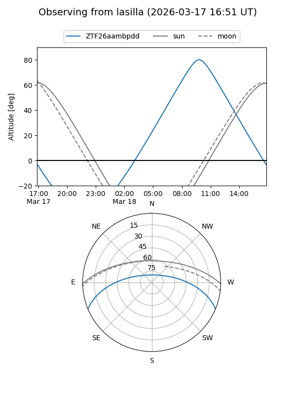
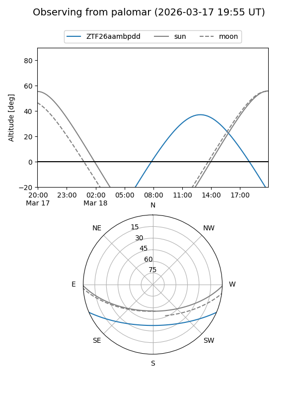

ZTF26aambpdd
Target ZTF26aambpdd at 2026-03-18 13:33
Aliases and brokers:
FINK: link
Lasair: link
ALeRCE: link
alt names
ZTF26aambpdd (ztf,fink_ztf)
Coordinates:
equatorial (ra, dec) = 252.0622,-19.45025
equatorial (HMS+DMS) = 16:48:14.94,-19:27:00.89
galactic (l, b) = (0.4071,+16.13092)
Flags:
Photometry:
last ztfg=16.85
1 ztfg detections
Lightcurve
Visibility


Additional plots